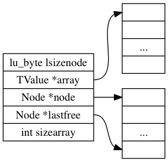

"table" in lua 5.2
Outline
- Basic of lua "table"
- Adapt lua "table" for multiple data structure
- Dive into lua "table" source code
Overview of lua
- dynamically-type: types are attached to values rather than to variables.
- basic types (first-class):
- nil (like "None" in Python, including undefined variables)
- boolean: true, false
- number: double-precision floating-point numbers (like "double" in C)
- string: immutable (once internalized, cannot be changed)
- table: associative arrays
- function: Lua functions, C functions
- heavy userdata
- light userdata
- thread: coroutines
Overview of table in lua
- Tables are the main — in fact, the only — data-structuring mechanism in Lua.
- Tables in Lua are associative arrays, that is, they can be indexed by any value (except nil) and can hold values of any type.
- Tables are dynamic in the sense that they may grow when data is added to them (by assigning a value to a hitherto non-existent field) and shrink when data is removed from them (by assigning nil to a field).
Basic
Table Creation
-- Empty table
local t1 = {}
-- Table as an array
local t2 = { 1, 2, "str", t1 }
-- Table as a hashtable
local t3 = {
["k1"] = "v1",
k2 = "v2",
}
-- Table as mixed data structure of array and hashtable
local t4 = {
"e1", -- stored in the array part
["k1"] = "v1", -- stored in the hash part
k2 = "v2", -- stored in the hash part
}
Table As An Array
Array Operations:
- Set the element of position "n"
- Get the element of position "n"
- Get the number of elements
- Iterate over all elements
- Delete the element of position "n"
Table As An Array: Setter
Set the element of position "n"
NOTE: index in lua starts from 1
-- Way #1: specify the index
local t = {}
t[1] = "e1"
t[2] = "e2"
t[3] = "e3"
t[4] = "e4"
-- Way #2: use table.insert (list, [pos,] value)
local t = {}
table.insert(t, 1, "e1")
table.insert(t, 2, "e2")
-- table.insert(t, x) inserts x at the end of list t
table.insert(t, "e3")
table.insert(t, "e4")
See the manual of table.insert
Table As An Array: Getter
Get the element of position "n"
local t = {"e1", "e2", "e3", "e4"}
-- Get the fourth element
print(t[4])
--[[
Output:
e4
]]
Table As An Array: Get element number
Get the number of elements
local t = {"e1", "e2", "e3", "e4"}
-- Way #1: the length operator "#"
print(#t)
--[[
Output:
4
]]
-- Way #2
--[[
table.unpack(t) returns "e1", "e2", "e3", "e4"
so it becomes:
print(select('#', "e1", "e2", "e3", "e4"))
]]
print(select('#', table.unpack(t)))
Refer to
Table As An Array: Iteration
Iterate over all elements
local t = {"e1", "e2", "e3", "e4"}
-- Forward iteration
for i = 1, 4 do
print(t[i])
end
--[[
Output:
e1
e2
e3
e4
]]
-- More general way:
for i = 1, #t do
print(t[i])
end
--[[
Output:
e1
e2
e3
e4
]]
-- Backward iteration:
-- for i = start, end, step do
-- end
for i = #t, 1, -1 do
print(t[i])
end
--[[
Output:
e4
e3
e2
e1
]]
There's another way of using an iterator. We will talk about that later.
Table As An Array: Delete
Delete the element of position "n"
-- Way #1: set the specified element as nil
local t = {"e1", "e2", "e3", "e4"}
-- Delete the third element
t[3] = nil
--[[
NOTE:
1. lua table will not pack the elements backward to fill the empty slot
2. the number of elements will not change
]]
print("The number of elements:", #t)
for i = 1, #t do
print(t[i])
end
--[[
Output:
The number of elements: 4
e1
e2
nil
e4
]]
Table As An Array: Delete
Delete the element of position "n"
-- Way #2: use table.remove (list [, pos])
local t = {"e1", "e2", "e3", "e4"}
table.remove(t, 3)
print("The number of elements:", #t)
for i = 1, #t do
print(t[i])
end
--[[
Output:
The number of elements: 3
e1
e2
e4
]]
table.remove(t)
print("The number of elements:", #t)
for i = 1, #t do
print(t[i])
end
--[[
Output:
The number of elements: 2
e1
e2
]]
See the manual of table.delete
Table As An Array: Delete
Common misuse of table.delete in loop
local t = {1, 2, 3, 4}
for i = 1, #t do
if t[i] < 4 then
table.remove(t, i)
end
end
--[[
Opps...
lua: xxx.lua:4: attempt to compare nil with number
stack traceback:
xxx.lua:4: in main chunk
[C]: in ?
]]
Table As An Array: Delete
Straightforward solution: use backward iteration
local t = {1, 2, 3, 4}
for i = #t, 1, -1 do
if t[i] < 4 then
table.remove(t, i)
end
end
for i = 1, #t do
print(t[i])
end
--[[
Output:
4
]]
We will see another misuse case of table.remove when we discuss iterator ;)
Table As A Hashtable
Hashtable Operations:
- Set the value of key "k"
- Get the value of key "k"
- Delete the value of key "k"
- Iterate over all key-value pairs
- Get the number of key-value pairs
Table As A Hashtable: Setter
local t = {}
-- Way #1
t["key"] = "value"
-- Way #2: syntactic sugar
t.key = "value"
-- Compare with the following code:
local key = "key"
t[key] = "value"
Table As A Hashtable: Setter
local t = {
"key" = "value",
}
print("t[\"key\"] = ", t["key"])
print("t.key = ", t.key)
local k = "key"
print("t[k] = ", t[k])
-- t.k is equivalent to t["k"]
print("t.k = ", t.k)
--[[
Output:
t["key"] = value
t.key = value
t[k] = value
t.k = nil
]]
Table As A Hashtable: Delete
local t = {
"key" = "value",
}
t.key = nil
Table As A Hashtable: Iteration
Meet "next (table [, index])"
Allows a program to traverse all fields of a table. Its first argument is a table and its second argument is an index in this table. next returns the next index of the table and its associated value. When called with nil as its second argument, next returns an initial index and its associated value. When called with the last index, or with nil in an empty table, next returns nil. If the second argument is absent, then it is interpreted as nil. In particular, you can use next(t) to check whether a table is empty.
local t = {
k1 = "v1",
k2 = "v2",
k3 = "v3",
}
local k, v
-- Note: equivalent to:
-- local k = nil
-- local v = nil
for i = 1, 3 do
k, v = next(t, k)
print(k, v)
end
-- NOTE: The order in which the indices are enumerated is not specified, even for numeric indices.
--[[
Output:
k1 v1
k3 v3
k2 v2
]]
See the manual of next
Table As A Hashtable: Iteration
What if we don't know there's three key-value pairs in the table `t`?
local t = {
k1 = "v1",
k2 = "v2",
k3 = "v3",
}
local k, v = next(t, k)
while k do
-- Note: equivalent to:
-- while k ~= nil do
print(k, v)
k, v = next(t, k)
end
--[[
Output:
k2 v2
k1 v1
k3 v3
]]
Iterator
More advance: meet "generic for" in lua
for {var-list} in {exp-list} do
{body}
end
We can write an iterator and use it in the generic for loop!
Iterator
Hand-written iterator (V1):
local t = {
k1 = "v1",
k2 = "v2",
k3 = "v3",
}
local function iter(t)
local last_k
return function()
local v
last_k, v = next(t, last_k)
return last_k, v
end
end
-- Use the iterator in the generic for loop
for k, v in iter(t) do
print(k, v)
end
--[[
Output:
k3 v3
k2 v2
k1 v1
]]
-- Use the iterator to rewrite the previous while loop
local producer = iter(t)
local k, v = producer()
while k do
print(k, v)
k, v = producer()
end
--[[
Output:
k3 v3
k2 v2
k1 v1
]]
It would be difficult to understand if you don't know anything about closure or lambda! :(
Iterator
Hand-written iterator (V2): we can pass a function and its parameters in {exp-list} of "generic for".
local t = {
k1 = "v1",
k2 = "v2",
k3 = "v3",
}
for k, v in next, t do
print(k, v)
end
--[[
Output:
k3 v3
k2 v2
k1 v1
]]
- Simpler code :)
- It would still be difficult to understand if you don't know functions in lua are first-class variables! :(
Iterator
There's a built-in iterator: "pairs"! XD
local t = {
k1 = "v1",
k2 = "v2",
k3 = "v3",
}
for k, v in pairs(t) do
print(k, v)
end
--[[
Output:
k3 v3
k1 v1
k2 v2
]]
See the manual of pairs
Iterator
There's another built-in iterator for array: "ipairs"! XD
local t = {"e1", "e2", "e3", "e4"}
-- Only forward iteration
for i, v in ipairs(t) do
print(i, v)
end
--[[
Output:
1 e1
2 e2
3 e3
4 e4
]]
See the manual of ipairs
Another common misuse of table.delete in loop
local t = {1, 2, 3, 4}
for i, v in ipairs(t) do
print("Access the element: ", v)
if v < 4 then
table.remove(t, i)
end
end
print("Result:")
for i, v in ipairs(t) do
print(i, v)
end
--[[
Output:
Access the element: 1
Access the element: 3
Result:
1 2
2 4
]]
Table As A Hashtable: Get the Number of key-value Pairs
local t = {
k1 = "v1",
k2 = "v2",
k3 = "v3",
}
-- Try the length operator "#":
print(#t)
--[[
Output:
0
]]
The length operator "#" only deals with the array part of table. :(
Table As A Hashtable: Get the Number of key-value Pairs
Since we know how to iterator over the table, we know how to count all the key-value pairs. :)
local t = {
k1 = "v1",
k2 = "v2",
k3 = "v3",
}
local cnt = 0
for i, v in pairs(t) do
cnt = cnt + 1
end
print(cnt)
--[[
Output:
3
]]
Complexity: O(N)
Data Structure
Matrices / Multi-Dimensional Arrays
Like C array:
-- Create a matrix of zeros with dimensions N by M
-- Way #1
mt = {} -- create the matrix
for i = 1, N do
mt[i] = {} -- create a new row
for j = 1, M do
mt[i][j] = 0
end
end
-- Way #2
mt = {} -- create the matrix
for i = 1, N do
for j = 1, M do
mt[i*M + j] = 0
end
end
Linked Lists
Stack
Queues and Double Queues
local List = {}
function List.new()
return {first = 0, last = -1}
end
function List.pushleft(list, value)
local first = list.first - 1
list.first = first
list[first] = value
end
function List.pushright(list, value)
local last = list.last + 1
list.last = last
list[last] = value
end
function List.popleft(list)
local first = list.first
if first > list.last then error("list is empty") end
local value = list[first]
list[first] = nil -- to allow garbage collection
list.first = first + 1
return value
end
function List.popright(list)
local last = list.last
if list.first > last then error("list is empty") end
local value = list[last]
list[last] = nil -- to allow garbage collection
list.last = last - 1
return value
end
Sets
local Set = {}
function Set.new()
return {}
end
function Set.add(set, element)
set[element] = true
end
function Set.has(set, element)
return set[element]
end
-- Union of two sets
function Set.union(set1, set2)
local union = {}
for _, set in ipairs({set1, set2}) do
for k, _ in pairs(set) do
union[k] = true
end
end
return union
end
--[[
For advanced lua user, you can write a more general function for set union.
e.g.
function Set.union(...)
local union = {}
for _, set in ipairs({...}) do
for k, _ in pairs(set) do
union[k] = true
end
end
return union
end
]]
-- Intersection of two sets
function Set.intersect(set1, set2)
local intersect = {}
for k, _ in pairs(set1) do
intersect[k] = set2[k]
end
return intersect
end
--[[
For advanced lua user, you can write a more general function for set intersection.
e.g.
-- This is a naive version of counting elements:
function Set.intersect(...)
local intersect = {}
local set_list = {...}
for _, set in ipairs(set_list) do
for k, _ in pairs() do
if intersect[k] then
intersect[k] = intersect[k] + 1
else
intersect[k] = 1
end
end
end
local num_of_set = #set_list
for k, num in pairs(intersect) do
if num < num_of_set then
intersect[k] = nil
else
intersect[k] = true
end
end
return intersect
end
-- This is a better version:
function Set.intersect(...)
local intersect = {}
local set_list = {...}
local first_set = set_list[1]
local num_of_set = #set_list
for k, _ in pairs(first_set) do
intersect[k] = true
for i = 2, num_of_set do
local set = set_list[i]
-- equivalent to:
-- set[k] == nil or set[k] == false
if not set[k] then
intersect[k] = nil
break
end
end
end
return intersect
end
]]
Dive into lua Source Code
I will omit some code for simplicity. XD
How do lua store table?
How do lua store table?
Definition in lobject.h:
typedef struct Table {
lu_byte lsizenode; /* log2 of size of `node' array */
TValue *array; /* array part */
Node *node;
Node *lastfree; /* any free position is before this position */
int sizearray; /* size of `array' array */
} Table;
lobject.c - some generic functions over Lua objects.
What does `Table` contain?
- A `Table` instance has at lease three continued areas in memory:
-

- The `Table` instance itself.
- `array`: array part of `Table`
- `node`: hashtable part of `Table`
- Fields of recording the size:
- size of array part: `sizearray`
- size of hashtable part: 2^`lsizenode`
#define twoto(x) (1<<(x)) #define sizenode(t) (twoto((t)->lsizenode))
Macros related to `Table`:
#define gnode(t,i) (&(t)->node[i])
What is `Node`?
typedef struct Node {
TValue i_val;
TKey i_key;
} Node;
`Node` is the structure for key-value pair
Macros related to `Node`:
#define gval(n) (&(n)->i_val)
What is `TValue` then?
typedef struct lua_TValue TValue;
/*
** Tagged Values. This is the basic representation of values in Lua,
** an actual value plus a tag with its type.
*/
struct lua_TValue {
Value value_;
int tt_;
};
`TValue` = Tagged Value
- `TValue` contains the value and a type tag
- Lua represents values as tagged unions, that is, as pairs (t, v), where t is an integer tag identifying the type of the value v, which is a union of C types implementing Lua types.
- omitted source code: NaN Trick
Macros related to `TValue`:
#define val_(o) ((o)->value_)
/* raw type tag of a TValue */
#define rttype(o) ((o)->tt_)
How does the tag distinguish different types of lua value?
lua.h
/*
** basic types
*/
#define LUA_TNONE (-1)
#define LUA_TNIL 0
#define LUA_TBOOLEAN 1
#define LUA_TLIGHTUSERDATA 2
#define LUA_TNUMBER 3
#define LUA_TSTRING 4
#define LUA_TTABLE 5
#define LUA_TFUNCTION 6
#define LUA_TUSERDATA 7
#define LUA_TTHREAD 8
#define LUA_NUMTAGS 9
How does the tag distinguish different types of lua value?
lobject.h
/* raw type tag of a TValue */
#define rttype(o) ((o)->tt_)
/* Macros to test type */
#define checktag(o,t) (rttype(o) == (t))
#define ttistable(o) checktag((o), LUA_TTABLE)
#define hvalue(o) check_exp(ttistable(o), &val_(o).gc->h)
Simplified code here
What is `Value`?
union Value {
GCObject *gc; /* collectable objects */
void *p; /* light userdata */
int b; /* booleans */
lua_CFunction f; /* light C functions */
lua_Number n; /* numbers */
};
`Value` can be:
- nil? No! Tag of `TValue` is enough
#define settt_(o,t) ((o)->tt_=(t))
#define setnilvalue(obj) settt_(obj, LUA_TNIL)
What is `Value`?
union Value {
GCObject *gc; /* collectable objects */
void *p; /* light userdata */
int b; /* booleans */
lua_CFunction f; /* light C functions */
lua_Number n; /* numbers */
};
`Value` can be:
- boolean? Yes! `Value` = `b`
- number? Yes! `Value` = `n`
#define val_(o) ((o)->value_) #define num_(o) (val_(o).n) #define setnvalue(obj,x) \ { TValue *io=(obj); num_(io)=(x); settt_(io, LUA_TNUMBER); } - light userdata? Yes! `Value` = `p`
- light C functions? Yes! `Value` = `f`
What is `Value`?
union Value {
GCObject *gc; /* collectable objects */
void *p; /* light userdata */
int b; /* booleans */
lua_CFunction f; /* light C functions */
lua_Number n; /* numbers */
};
`Value` can be:
- string, table, other function, heavy userdata, thread? `Value` = `gc`
#define sethvalue(L,obj,x) \
{ TValue *io=(obj); \
val_(io).gc=cast(GCObject *, (x)); settt_(io, LUA_TTABLE); }
What is `GCObject` then?
lstate.h
/*
** Union of all collectable objects
*/
typedef union GCObject GCObject;
union GCObject {
GCheader gch; /* common header */
union TString ts;
union Udata u;
union Closure cl;
struct Table h;
struct Proto p;
struct UpVal uv;
struct lua_State th; /* thread */
};
lstate.c - global state. Includes functions for opening and closing Lua states (lua_newstate/lua_close) and threads (luaE_newthread / luaE_freethread).
What is `TValue`?

What is `TKey`?
typedef union TKey {
struct {
Value value_;
int tt_;
struct Node *next; /* for chaining */
} nk;
TValue tvk;
} TKey;
Macros related to `TKey`:
#define gkey(n) (&(n)->i_key.tvk)
#define gnext(n) ((n)->i_key.nk.next)
Combine `TValue` and `TKey` into `Node`

What happens when creating a `Table`?
General procedure of lua program:

Here we care about the execution phrase, and we will start our analysis from function `luaV_execute`.
Start from the naive example
local t = {}
0+ params, 2 slots, 1 upvalue, 1 local, 0 constants, 0 functions
1 [1] NEWTABLE 0 0 0
2 [1] RETURN 0 1
Instructions related to table creation:
1 [1] NEWTABLE 0 0 0
NEWTABLE instruction
NEWTABLE A B C R(A) := {} (size = B,C)
- Creates a new empty table at register R(A).
- B and C are the encoded size information for the array part and the hash part of the table, respectively. Appropriate values for B and C are set in order to avoid rehashing when initially populating the table with array values or hash key-value pairs. If an empty table is created, both sizes are zero.
Execute NEWTABLE in lua VM
void luaV_execute (lua_State *L) {
CallInfo *ci = L->ci;
LClosure *cl;
TValue *k;
StkId base;
newframe: /* reentry point when frame changes (call/return) */
lua_assert(ci == L->ci);
cl = clLvalue(ci->func);
k = cl->p->k;
base = ci->u.l.base;
/* main loop of interpreter */
for (;;) {
Instruction i = *(ci->u.l.savedpc++);
StkId ra;
if ((L->hookmask & (LUA_MASKLINE | LUA_MASKCOUNT)) &&
(--L->hookcount == 0 || L->hookmask & LUA_MASKLINE)) {
Protect(traceexec(L));
}
/* WARNING: several calls may realloc the stack and invalidate `ra' */
ra = RA(i);
lua_assert(base == ci->u.l.base);
lua_assert(base <= L->top && L->top < L->stack + L->stacksize);
vmdispatch (GET_OPCODE(i)) {
vmcase(OP_NEWTABLE,
int b = GETARG_B(i);
int c = GETARG_C(i);
Table *t = luaH_new(L);
sethvalue(L, ra, t);
if (b != 0 || c != 0)
luaH_resize(L, t, luaO_fb2int(b), luaO_fb2int(c));
checkGC(L, ra + 1);
)
}
}
}
Execute NEWTABLE in lua VM
A bit comfused? We only need to trace this part of code for the naive example:
vmcase(OP_NEWTABLE,
// Get the operator B from the instruction
int b = GETARG_B(i);
// Get the operator C from the instruction
int c = GETARG_C(i);
Table *t = luaH_new(L);
// Remember this macro? ;)
sethvalue(L, ra, t);
)
Now we only need to look at `luaH_new`. :)
Execute NEWTABLE in lua VM
Table *luaH_new (lua_State *L) {
Table *t = &luaC_newobj(L, LUA_TTABLE, sizeof(Table), NULL, 0)->h;
t->array = NULL;
t->sizearray = 0;
setnodevector(L, t, 0);
return t;
}
static void setnodevector (lua_State *L, Table *t, int size) {
int lsize;
if (size == 0) { /* no elements to hash part? */
t->node = cast(Node *, dummynode); /* use common `dummynode' */
lsize = 0;
}
else {
int i;
lsize = luaO_ceillog2(size);
if (lsize > MAXBITS)
luaG_runerror(L, "table overflow");
size = twoto(lsize);
t->node = luaM_newvector(L, size, Node);
for (i=0; ilsizenode = cast_byte(lsize);
t->lastfree = gnode(t, size); /* all positions are free */
}
It's simpler in our case...
Table *luaH_new (lua_State *L) {
Table *t = &luaC_newobj(L, LUA_TTABLE, sizeof(Table), NULL, 0)->h;
t->array = NULL;
t->sizearray = 0;
t->node = cast(Node *, dummynode); /* use common `dummynode' */
t->lsizenode = 0;
t->lastfree = gnode(t, size); /* all positions are free */
return t;
}
What's dummynode?
/* macro defining a nil value */
#define NILCONSTANT {NULL}, LUA_TNIL
#define dummynode (&dummynode_)
#define isdummy(n) ((n) == dummynode)
static const Node dummynode_ = {
{NILCONSTANT}, /* value */
{{NILCONSTANT, NULL}} /* key */
};
All empty table in lua points to the same memory area. CLEVER LUA!
What happens when creating a `Table`?
What about creating a non-empty table?
We will come back later. ;)
What happens when accessing a `Table`?
Another naive example: